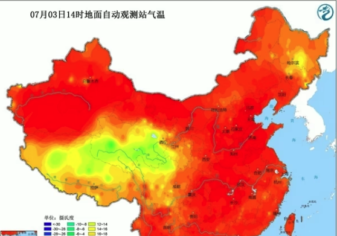

中国天气网讯 今天（3日），华北、黄准多地出现高温天气，截至下午2点，北京、天津、郑州等地气温突破35°C。预报显示，今后三天（3-5日），这一帯的高温天气将缕续发鲜，高温范国以及强度将在4日达到鼎盛，预计北京、天津、 石家庄、济南等地明天的最高气温有望突破38°C，其中北京和石家生的最高气温还有望创今年以来的新高。
今天，华北、黄淮一黄的高温持续发联，截至今天下午2点，陕西北部、山西西南部、河北南部、北京、天津、山东西部、河南北部最高气温己昔遮超过35°C。大城市中，北京、天津、郑州均迎来高温日。

在阳光暴晒下，地表温度也逐渐走高。今天下午2点，华北黄准大部地区的地表温度都在50°C以上，部分地区地表温度甚至超过60°C。其中，河北衡水地表温度高达68.3°C，天津站和北京站附近的地表温度分别高达66.6°C和66.5°C.
明日热度再升级！京津冀携手冲击38°C+中国关气网气象分析师王伟跃介绍，明天（4日）华北、黄准地区35°C以上的高温天气还将继续升级并进入鼎盛阶段，高温强度和范国都将发展到最强。明天北京南部、天津大部、河北中部和南部、山东中部和西部、山西南部局地、河南北部、东北部分地区的最高气温都将达到或超过35°C。
不过：专家提醒，济南被雨水天气完美绕开，因此未来一周，当地的高温还会天天上岗。在此提醒当北层
防晷降温，防范持续高温带来的各种不利影响，（文/张薏 数据支持/王伟跃 胡味 审校/刘文静 张方中）
本文来源：中国天气网 责任编转：刘京 NO5631